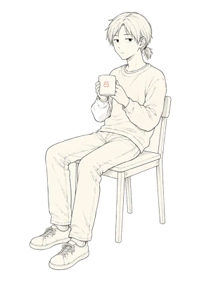

架桥者 · BUILDER
日间形态 · DAY FORM

- 活动范围RANGE
- 模型与现实之间BETWEEN MODELS AND REAL LIFE
- 任务MISSION
- 让技术越过对话框MOVE TECHNOLOGY BEYOND THE CHATBOX
- 处理PROCESS
- 拆解 · 接线 · 验证DECOMPOSE · CONNECT · VERIFY
- 输出OUTPUT
- AI和人类共存的世界AGENTS THAT WORK IN THE HUMAN WORLD
- 异常EXCEPTION
- "凑合用吧。""WE'LL HAVE TO MAKE DO."
- 唤醒词WAKE WORD
- "先给我看日志。""SHOW ME THE LOGS FIRST."